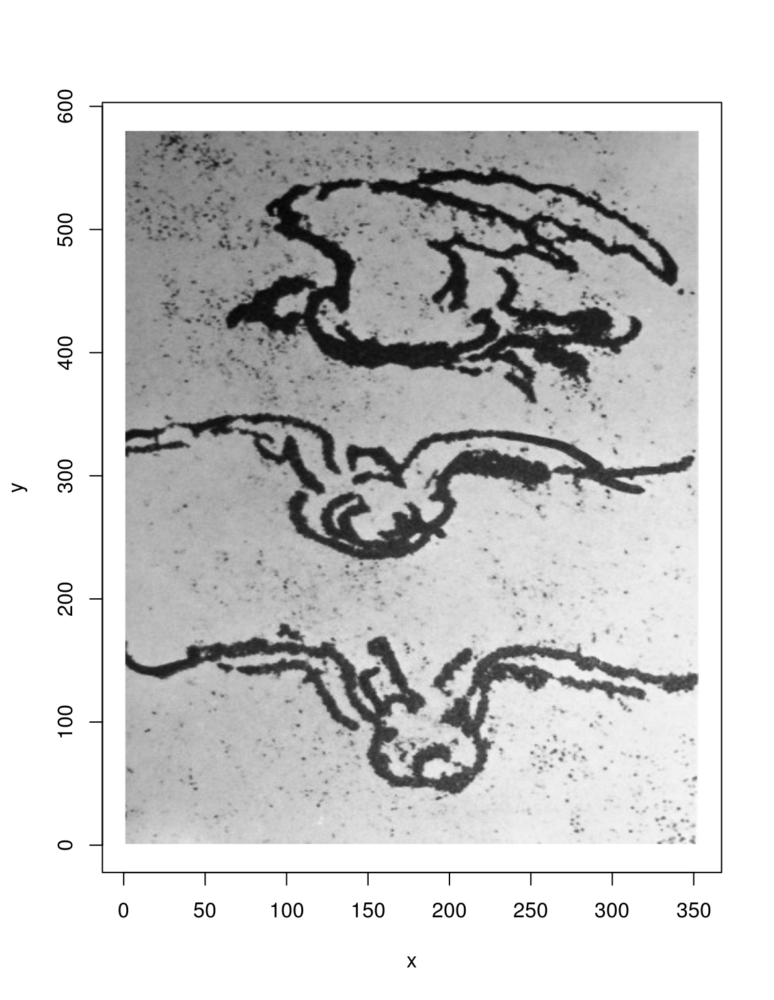
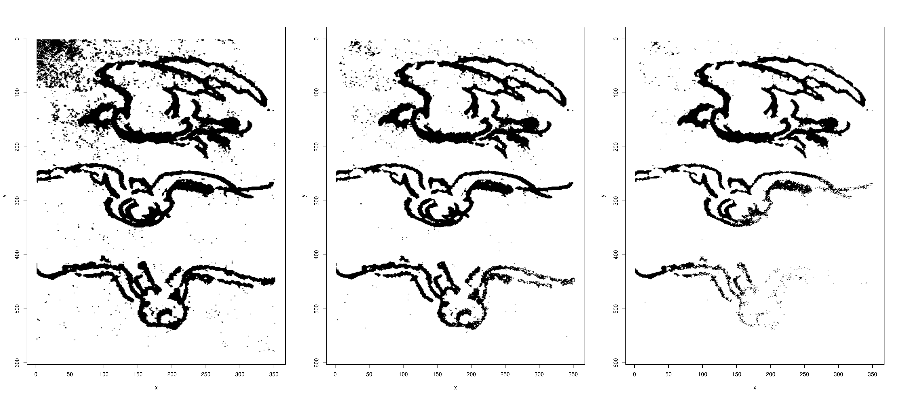
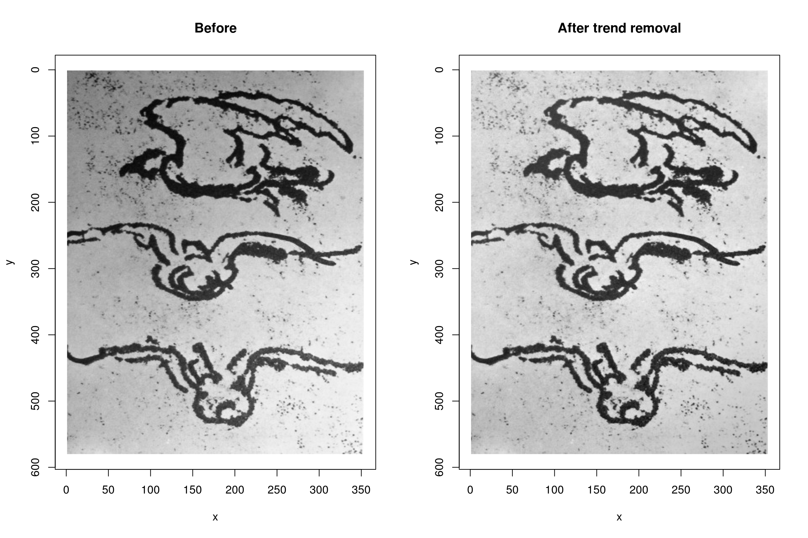
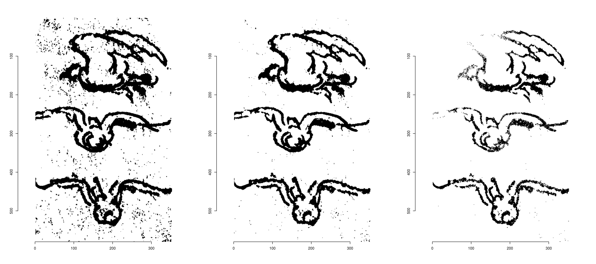
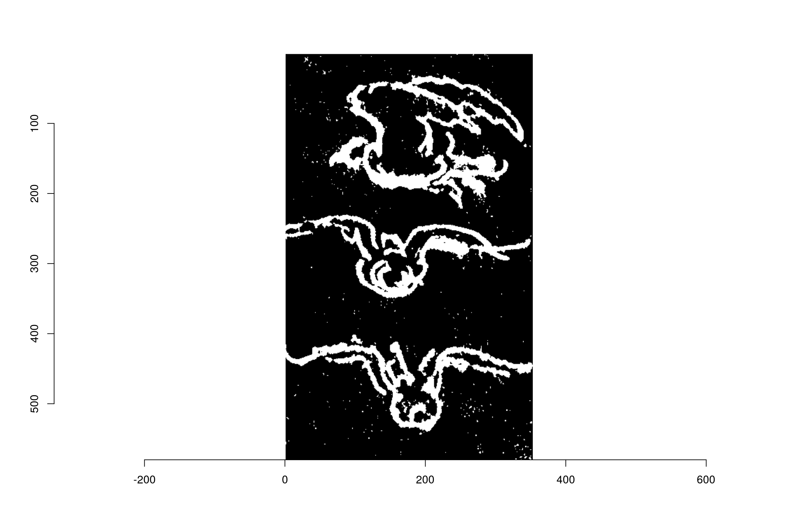
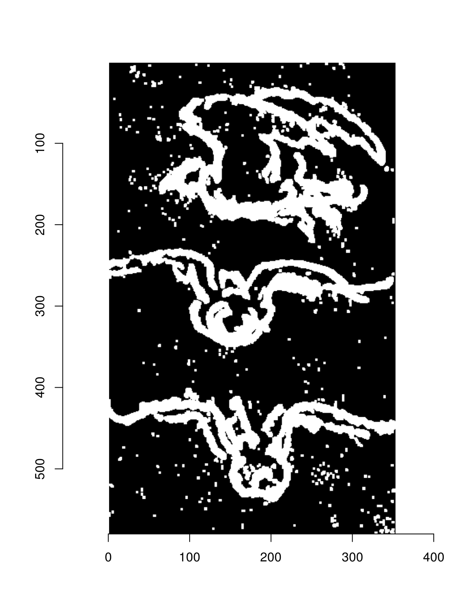
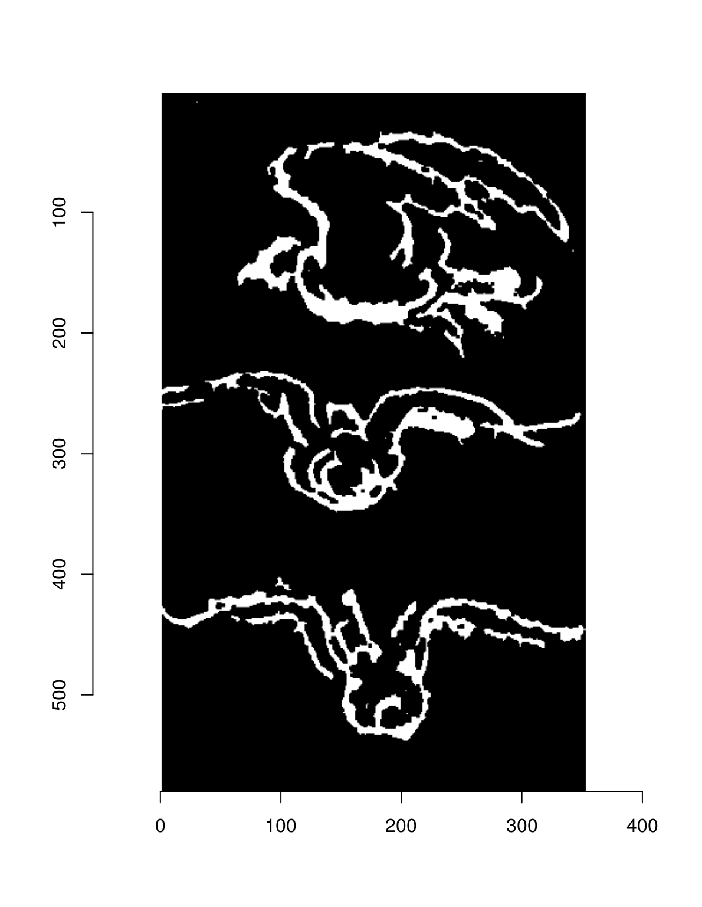
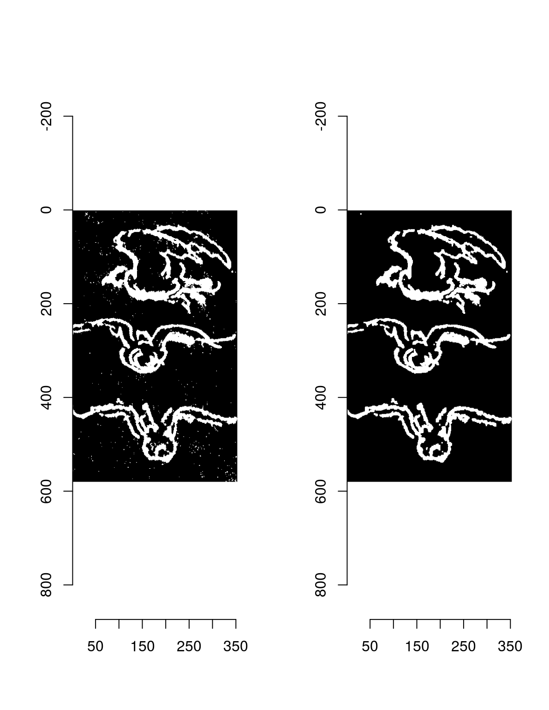
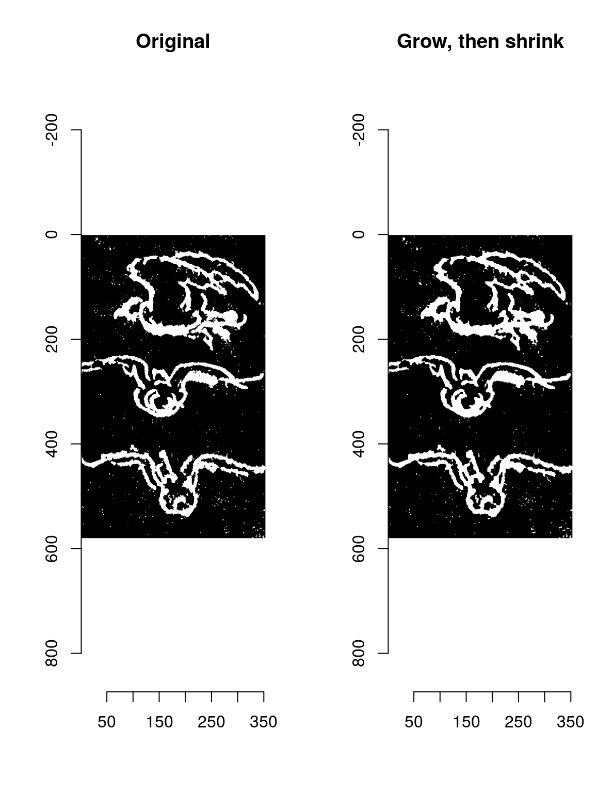
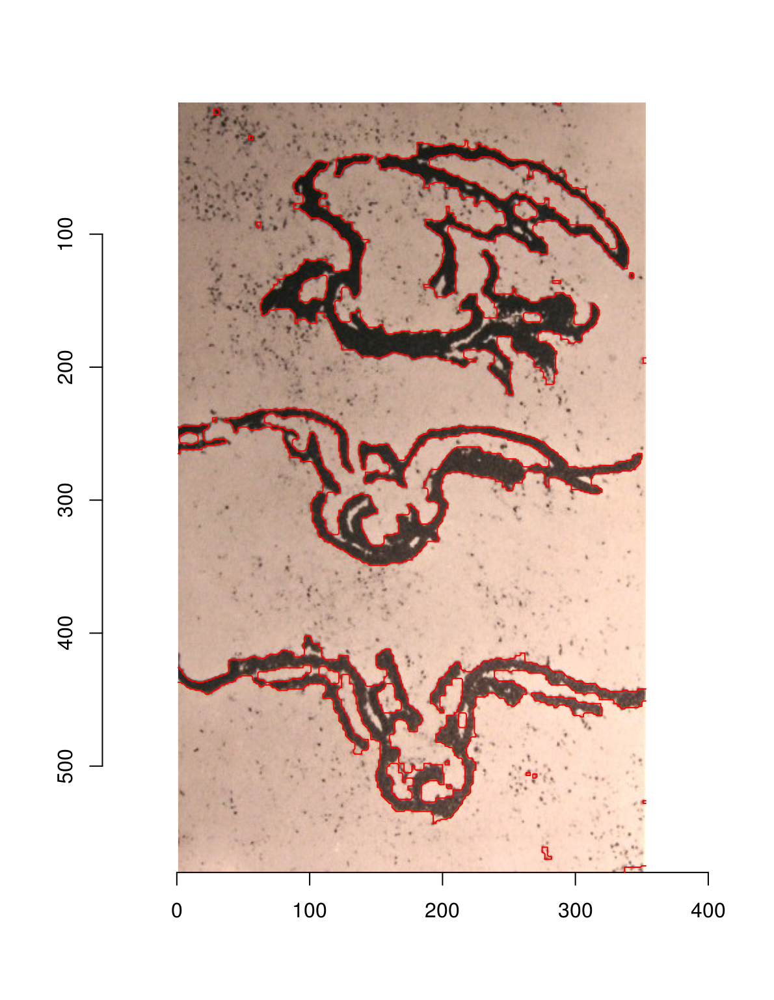

Morphological operations in imager
Simon Barthelmé (GIPSA-lab, CNRS)
1 Thresholding, and correcting for varying luminance
Our first example will be based on a sketch by Leonardo. Let’s say we want to extract an outline of the birds:
im <- load.example("birds")
plot(im)
im.g <- grayscale(im)
plot(im.g)
We could try thresholding:
layout(t(1:3))
threshold(im.g,"20%") %>% plot
threshold(im.g,"15%") %>% plot
threshold(im.g,"10%") %>% plot
The problem is that there is a luminance trend in the image (it is noticeably lighter at the bottom), so that a fixed threshold doesn’t work very well. Fortunately we can remove that trend using a linear model. We’re going to use R’s built-in lm function. The first step is to convert the image data to a data.frame, then fit a model:
df <- as.data.frame(im.g)
head(df,5) ## x y value
## 1 1 1 0.3917255
## 2 2 1 0.4740784
## 3 3 1 0.4485098
## 4 4 1 0.4829412
## 5 5 1 0.4790196m <- lm(value ~ x + y,data=df) #linear trend
summary(m)##
## Call:
## lm(formula = value ~ x + y, data = df)
##
## Residuals:
## Min 1Q Median 3Q Max
## -0.59713 0.01637 0.07833 0.10800 0.23080
##
## Coefficients:
## Estimate Std. Error t value Pr(>|t|)
## (Intercept) 3.959e-01 1.082e-03 365.9 <2e-16 ***
## x 5.333e-04 4.006e-06 133.1 <2e-16 ***
## y 5.334e-04 2.438e-06 218.8 <2e-16 ***
## ---
## Signif. codes: 0 '***' 0.001 '**' 0.01 '*' 0.05 '.' 0.1 ' ' 1
##
## Residual standard error: 0.1847 on 204737 degrees of freedom
## Multiple R-squared: 0.2427, Adjusted R-squared: 0.2427
## F-statistic: 3.28e+04 on 2 and 204737 DF, p-value: < 2.2e-16We can extract fitted values to remove the luminance trend:
layout(t(1:2))
im.f <- im.g-fitted(m)
plot(im.g,main="Before")
plot(im.f,main="After trend removal")
It’s now easier to threshold the image:
#Note the use of map_il, which is a kind of "lapply" that returns an image list
#map_il wraps map, from the purrr package
paste0(c(20,15,10),"%") %>% map_il(~ threshold(im.f,.)) %>% plot(layout="row")
2 Morphological operations on pixsets
We’ll go on with a thresholding at 16%, and we can start to play with some morphological operations.
im.t <- threshold(im.f,"16%")
px <- as.pixset(1-im.t) #Convert to pixset
plot(px)
Black and white images can be converted to “pixset” objects, which come with many convenience functions. In the image above, the pixels in white define the pixset.
“grow” (morphological dilation) enlarges a pixset:
grow(px,3) %>% plot(main="Growing by 3 pixels")
“shrink” shrinks it:
shrink(px,3) %>% plot(main="Shrinking by 3 pixels")
Note how “shrink” removes all the isolated dots. “grow” and “shrink” aren’t inverse operations: indeed, if we combine “shrink” followed by “grow”, we can clean up pixsets.
layout(t(1:2))
plot(px,main="Original")
shrink(px,3) %>% grow(3) %>% plot(main="Shrink, then grow")
There’s a shortcut for that called “clean”.
The opposite tends to fill in holes:
layout(t(1:2))
plot(px,main="Original")
grow(px,3) %>% shrink(3) %>% plot(main="Grow, then shrink")
The shortcut is called “fill”.
Combining these operations we can get a pretty good outline for the birds:
plot(im)
fill(px,5) %>% clean(3) %>% highlight